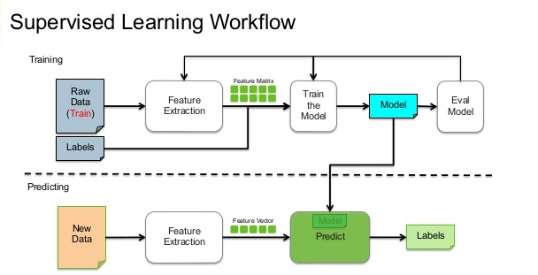
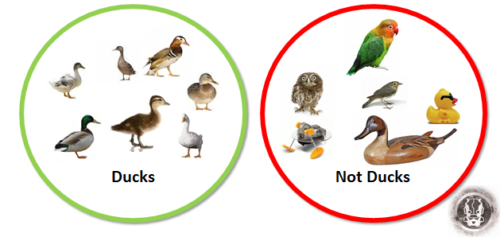
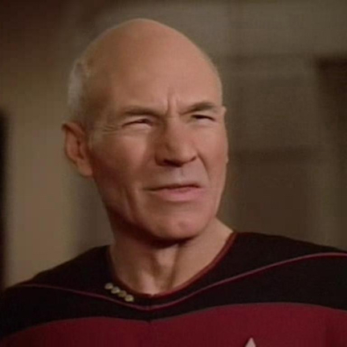

Machine Learning
Demystified and Applied
Hi, I'm Michael Mann and I work at NLP Logix. We build predictive models and data visualizations to support our customers desire to make more money.
Can anyone tell me what this equation is
Z Score converts data in the frequency distribution such that the mean is 0 and the standard deviation is 1
Who are we as Developers
Functional Programmers
Web Programmer
Object Oriented Programmer
If Then Programmer
Who we really are
An Experiment
How would you write a program to identify the number 7
Feature Extraction in OCR Systems
A character is represented as a feature vector, which becomes its identity. The major goal of feature extraction is to extract a set of features, which maximizes the recognition rate with the least amount of elements and to generate similar feature set for variety of instances of the same symbol.
Feature Extraction Approaches in OCR Systems
- Template Matching
- Deformable templates
- Unitary transforms
- Zoning
- Geometric moments
- Zernike moments
Zoning
Frame of character is divided into several overlapping and non-overlapping zones. The densities of the point or some features in different regions are analysed to form the representation. E.g. Bending point features indicate high curvature points, terminal points and fork points

Classification
The classification stage in an OCR process assigns labels to character images based on the features extracted and the relationships among the features.
How would you write a program to identify the number 7
Ok, so what about the rest of the numbers
What if we wanted to add characters also
ENTER MACHINE LEARNING
Machine Learning Terminology
Supervised Learning
Supervised learning is the machine learning task of inferring a function y = f(x) from labeled training data
Unsupervised Learning
Unsupervised learning is the machine learning task of inferring a function to describe hidden structure from unlabeled data.
Supervised Learning - Classification
The problem of identifying to which of a set of categories (sub-populations) a new observation belongs
Supervised Learning - Regression
In the problem of Regression you are looking at estimating a real value like a dollar amount
Features
The characteristics of the data that help describe the example to the machine learning model such that the machine learning model can accurately predict the label
$Y$ and $\hat{Y} $
Y - Label you are trying to predict
Y hat - Prediction of Model
Error - The difference between $Y$ and $\hat{Y} $
Example Cost Functions
A function to measure prediction accuracy- Classification
- Accuracy
- Area Under the Curve (AUC)
- Regression
- Mean Squared Error (MSE)
- Mean Absolute Error (MAE)
Some Common ML Algorithms
Supervised - Decision Trees
Supervised / Unsupervised - Neural Net
Unsupervised - k-Means
Revisiting Our Experiment Using Machine Learning
The MNIST Dataset
A database of handwritten digits that is commonly used for training various image processing system and machine learning models
Training a Neural Network to Recognize MNIST digits using Tensorflow
I dont care about predicting numbers, I have real problems to solve
Business Use cases for Machine Learning
Google Cuts Its Giant Electricity Bill With DeepMind-Powered AI
Machine Learning at NLP Logix
People and Skills
Math and Stats
Software Engineering
Data Visualization / Information Discovery
Business
Tools and Technology
Machine Learning Toolkit (MLTK)
Proven open source libraries ie Tensorflow, scikit-learn etc
Academic Research
Data Science Competitions